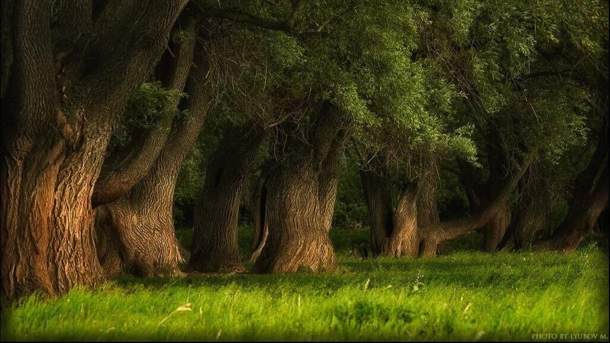
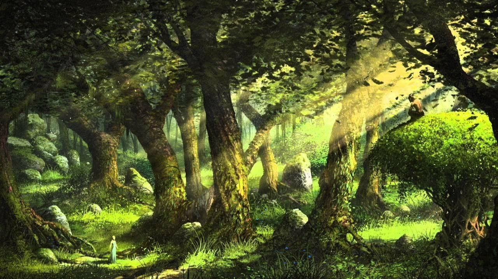
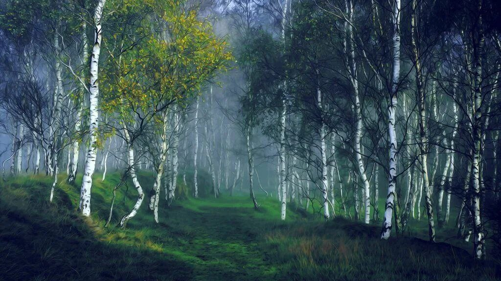

Идрийский лес довольно большой, и за день и за два не обойдешь от края до края. Условно он делится на три части: западная часть представляет собой преимущественно дубовый и каштановый бор. Пренадлежит запад столице, в этой части леса чаще можно встретить оленя и здесь же охотится различная знать, в королевском лесу вы можете чувствовать себя безопасно, однако сбор грибов, ягод, вырубка леса и охота тут запрещены, а на собирание трав нужно иметь "Разрешение Знахаря".
Идрийский лес

Добро пожаловать в Идрийский лес!
Идрийский лес находится к северо-востоку от столицы и представляет собой огромную территорию полную буреломов, тихих чащоб и приветливых опушек. Лес сухой без болотистой местности и преимущественно лиственный, хвойные породы здесь практически не встречаются. Среди белых берез и массивных дубрав полно грибов, различных ягод, ядовитых и целебных трав, а так же разнообразной дичи. Иногда встречаются старые таинственные руины или же пещеры, неизвестно как появившиеся и кем созданные. К пещера люди стараются не приближаться, ибо в них частенько можно встретить троллей или иную опасную живность. Тем времеем местные руины населяют странные создания—фубусы, о них мало что известно, однако ходят слухи, что они помогают заблудившимся путникам найти выход из леса.
Запад

Центр

Средняя полоса представляет собой непроходимые буреломы и дремучие лощины, здесь множество оврагов и легко потеряться, часто можно встретить те самые руины и родники чистой воды. Породы деревьев все те-же, однако к ним добавляется клен, ясень и липа.
Восток

Восточная полоса самая маленькая из трех имеющихся, она постепенно выходит из средней и представляет собой практически кромку леса, пройти её поперёк можно всего за пару часов, она отличается более приветливыми пейзажами и более спокойным рельефом. Преимущественно здесь растёт берёза, однако и предыдущие породы тут так же встречаются, пусть и реже.
И как говорится...
"Леса таят в себе иной раз куда больше историй чем любой самый талантливый рассказчик": Из рассказов старой ведьмы.